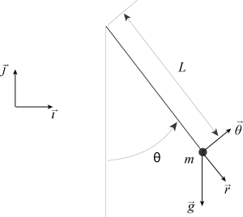
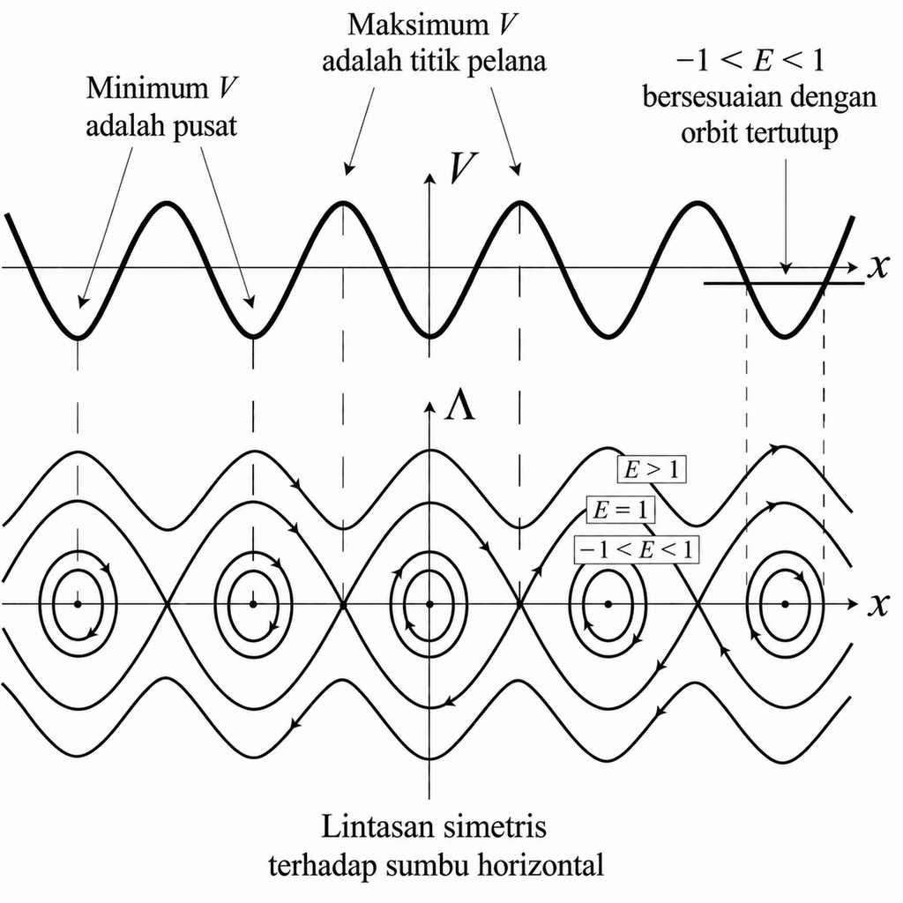
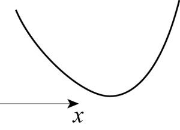
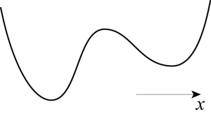
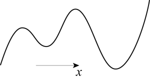

Pada akhir bab ini, Anda akan mampu melakukan hal-hal berikut.
- Menerapkan proses pemodelan pada suatu sistem mekanis sederhana, yaitu pendulum nonlinear.
- Menggunakan hukum Newton untuk menurunkan persamaan diferensial bagi dinamika pendulum.
- Menggabungkan variabel dan parameter menjadi besaran tak berdimensi.
- Menilai apakah suatu model matematika benar secara dimensi.
- Menyintesis dinamika persamaan diferensial otonom orde kedua melalui metode energi atau analisis bidang fase.
Sifat masalah, asumsi, dan persamaan model
Kita meninjau gerak sebuah pendulum, yaitu suatu massa yang digantungkan pada salah satu ujung tali, sementara ujung lainnya terikat pada titik tetap (lihat Gambar 3.1). Periode pendulum diketahui bergantung pada amplitudonya. Pembaca dapat merujuk pada Gambar 4 dalam artikel tahun 2005 karya Lima dan Arun beserta rujukan di dalamnya.
[caption id="attachment_29" align="alignleft" width="300"]
Gambar 3.1. Sketsa sebuah pendulum. [Deskripsi Gambar][/caption]Selanjutnya, kita akan mengasumsikan bahwa benda yang terikat pada tali merupakan suatu massa titik, bahwa tali tidak bermassa, serta bahwa baik massa benda maupun panjang tali tidak berubah terhadap waktu. Kita akan menganggap gerak berlangsung dalam satu bidang (perhatikan bahwa ini merupakan hampiran karena pendulum cenderung mengalami gerak presesi yang lambat). Kita akan menggunakan hukum Newton untuk mendeskripsikan dinamika pendulum. Gaya-gaya yang bekerja pada massa adalah gaya gravitasi $latex \vec F_g$, yang akan kita anggap konstan (lihat soal-soal untuk pembenarannya), tegangan $latex \vec F_t$ yang diberikan oleh tali, dan gaya gesek $latex \vec F_f$ yang diberikan oleh udara di sekitar massa. Kita akan mengasumsikan bahwa gaya ini berlawanan arah dan sebanding dengan kecepatan massa. Ini pun merupakan hampiran; untuk informasi lebih lanjut, lihat misalnya Redaman Pendulum karya P. Squire (1986).
Untuk merumuskan masalah ini, kita mendefinisikan basis vektor $latex (\vec \imath, \vec \jmath)$ bagi bidang tempat gerak berlangsung. Kita menyatakan panjang tali dengan $latex l$ dan massa benda yang terikat pada tali dengan $latex m$. Kita mengukur posisi massa titik melalui sudut $latex \theta$ antara tali dan garis vertikal (lihat Gambar 3.1). Vektor posisi massa titik $latex \vec x$ diberikan oleh
$latex \vec x = l \sin(\theta)\, \vec \imath - l \cos(\theta)\, \vec \jmath \equiv l \vec r,$
dengan $latex \vec r = \sin(\theta) \vec \imath- \cos(\theta) \vec \jmath$. Vektor satuan yang ortogonal terhadap $latex \vec r$ dan sedemikian rupa sehingga $latex (\vec r, \vec \theta)$ membentuk basis terorientasi positif pada bidang $latex (x,y)$ adalah $latex \vec \theta = \cos(\theta)\, \vec \imath+ \sin(\theta)\, \vec \jmath.$
Sekarang kita dapat menggunakan informasi ini untuk menyatakan turunan pertama dan kedua vektor posisi $latex \vec x$ dalam bentuk vektor $latex \vec r$, $latex \vec \theta$, dan turunan sudut $latex \theta$. Kita memperoleh
$latex \displaystyle \frac{d \vec x}{d t} = \left(l \cos(\theta)\, \vec \imath+ l \sin(\theta)\, \vec \jmath\,\right) \frac{d \theta}{d t} = l \frac{d \theta}{d t} \vec \theta \qquad (3.1)$
$latex \begin{align*} \frac{d^2 \vec x}{d t^2} &= l \frac{d^2 \theta}{d t^2} \vec \theta + \left(- l \sin(\theta)\, \vec \imath+ l \cos(\theta)\, \vec \jmath\,\right) \left(\frac{d \theta}{d t}\right)^2 \\ & = l \frac{d^2 \theta}{d t^2} \vec \theta - l \left(\frac{d \theta}{d t} \right)^2 \vec r. \end{align*} \qquad (3.2) $
Hukum Newton menyatakan bahwa hasil kali massa titik dan percepatannya sama dengan jumlah gaya yang bekerja pada massa tersebut. Dengan kata lain, kita memiliki
$latex \displaystyle m \frac{d^2 \vec x}{d t^2} = \vec F_g +\vec F_t +\vec F_f, \qquad (3.3)$
dengan
- $latex \vec F_g = - m g \, \vec \jmath= m g \cos(\theta)\, \vec r - m g \sin(\theta)\, \vec \theta$ adalah gaya gravitasi,
- $latex \vec F_t = - T\, \vec r$ adalah tegangan yang diberikan oleh tali,
- $latex \displaystyle \vec F_f = - c \frac{d \vec x}{d t} = - c l \frac{d \theta}{d t}\, \vec \theta$, dengan $latex c \gt 0$, adalah gaya gesek (kita menggunakan Persamaan (3.1) untuk memperoleh kesamaan terakhir).
Perhatikan bahwa kita telah menyatakan gaya-gaya dalam basis vektor $latex \vec r$ dan $latex \vec \theta$, bukan dalam $latex \vec \imath$ dan $latex \vec \jmath$. Alasannya, bentuk $latex d^2 \vec x / d t^2$ sederhana jika ditulis dalam $latex \vec r $ dan $latex \vec \theta$ (lihat Persamaan (3.2)). Dengan menggabungkan seluruh informasi ini, kita memperoleh
$latex \displaystyle m l \frac{d^2 \theta}{d t^2} \, \vec \theta - m l \left(\frac{d \theta}{d t}\right)^2 \, \vec r = m g \cos(\theta)\, \vec r - m g \sin(\theta)\, \vec \theta - T \, \vec r - c l \frac{d \theta}{d t} \, \vec \theta,$
yang, setelah diproyeksikan ke arah $latex \vec r$ dan $latex \vec \theta$, menghasilkan sistem persamaan
$latex \displaystyle - m l \left(\frac{d \theta}{d t}\right)^2 = m g \cos(\theta) - T \qquad (3.4)$
$latex \displaystyle m l \frac{d ^2 \theta}{d t^2} = - m g \sin(\theta) - c l \frac{d \theta}{d t}. \qquad (3.5)$
Persamaan (3.4) memberikan rumus bagi tegangan $latex T$ sebagai fungsi sudut $latex \theta$ dan turunannya, sedangkan Persamaan (3.5), yang tidak memuat $latex T$, merupakan persamaan diferensial biasa nonlinear bagi sudut $latex \theta$. Persamaan ini mendeskripsikan gerak pendulum nonlinear. Persamaan tersebut biasanya dilengkapi dengan kondisi awal, yang memberikan sudut dan kecepatan sudut pendulum pada suatu waktu tertentu, misalnya $latex t = 0$. Kondisi awal itu adalah
$latex \displaystyle \theta(0) = \theta_0, \qquad \frac{d \theta}{d t}(0) = \Omega_0, \qquad (3.6)$
dengan $latex \theta_0$ dan $latex \Omega_0$ telah diketahui.
Analisis tanpa gesekan
Jika tidak ada gesekan, Persamaan (3.5) dapat ditulis ulang menjadi
$latex \displaystyle \frac{d^2 \theta}{d t^2} = - \frac{g}{l} \sin(\theta) = - \omega_0^2 \sin(\theta), \qquad (3.7)$
dengan mendefinisikan $latex \omega_0 = \sqrt{g / l}$.
Analisis dimensi
Langkah pertama dalam menganalisis suatu model ialah melakukan analisis dimensi untuk memeriksa apakah berbagai suku yang muncul dalam persamaan-persamaan penyusun model memiliki dimensi yang sama. Selanjutnya, kita akan menggunakan notasi baku berikut:
- $latex T$ (jangan disamakan dengan tegangan di atas) akan menyatakan besaran yang memiliki dimensi waktu. Perhatikan bahwa besaran semacam itu dapat dinyatakan dalam berbagai satuan, seperti detik, menit, hari, tahun, dan sebagainya.
- $latex M$ akan menyatakan besaran yang memiliki dimensi massa. Satuan yang bersesuaian dapat berupa gram, kilogram, dan sebagainya.
- $latex L$ akan menyatakan besaran yang memiliki dimensi panjang. Di sini pun, besaran semacam itu dapat memiliki berbagai satuan, seperti meter, kaki, yard, kilometer, dan sebagainya.
Karena itu, penting untuk membedakan dimensi dan satuan. Sebagai contoh, tinjau suku-suku yang muncul dalam Persamaan (3.7). Sudut $latex \theta$ tidak berdimensi (perhatikan bahwa ini tidak berarti sudut tersebut tidak memiliki satuan karena sudut biasanya diukur dalam radian atau derajat). Besaran yang menjadi argumen suatu fungsi (seperti $latex \theta$ dalam suku $latex \sin(\theta)$ pada Persamaan (3.7)) harus tak berdimensi. Hal ini harus selalu kita periksa setiap kali menjumpai sebuah ekspresi matematika. Selanjutnya, ruas kiri Persamaan (3.7) berdimensi kebalikan kuadrat waktu. Jadi, kita menulis (tanda kurung siku menyatakan “dimensi”)
$latex \displaystyle \left[\frac{d^2 \theta}{d t^2}\right] = T^{-2}.$
Ruas kanan Persamaan (3.7) harus memiliki dimensi yang sama. Karena fungsi seperti $latex \sin(\theta)$ tidak berdimensi, kita menyimpulkan bahwa
$latex \displaystyle \left[\frac{g}{l}\right] = T^{-2},$
yang sekarang harus kita periksa. Untuk melakukannya, kita perlu mencari dimensi percepatan gravitasi $latex g$. Seperti tersirat oleh namanya, $latex g$ berdimensi percepatan, yaitu $latex [g] = L\, T^{-2}.$ Karena $latex [l] = L$, tampak bahwa memang $latex [g / l] = T^{-2}$. Akibatnya, $latex [\omega_0] = T^{-1}$, yaitu $latex \omega_0$ merupakan frekuensi, sesuai dugaan. Dengan demikian, Persamaan (3.7) benar secara dimensi.
Penskalaan
Sebelum mulai menganalisis suatu persamaan diferensial, sering kali bermanfaat untuk menskalakan ulang persamaan itu, yaitu menuliskannya kembali dalam bentuk yang memiliki sesedikit mungkin parameter. Alasannya, besaran yang mengendalikan dinamika suatu masalah sering kali bukan parameter itu sendiri, melainkan kombinasinya. Sebagai contoh, Persamaan (3.7) menunjukkan bahwa kombinasi $latex g / l$ merupakan besaran yang relevan untuk mendeskripsikan gerak pendulum tanpa gesekan. Akibatnya, hanya ada satu parameter yang relevan, yaitu $latex \omega_0$, bukan dua parameter ($latex g$ dan $latex l$). Kita bahkan dapat melangkah lebih jauh. Karena $latex \omega_0$ berdimensi kebalikan waktu, kita dapat mendefinisikan waktu karakteristik
$latex \displaystyle t_0 = \sqrt{\frac{l}{g}},$
dan mendefinisikan variabel waktu tak berdimensi $latex \tau$ sebagai
$latex \tau = \frac{t}{t_0}.$
Dengan menyubstitusikan hubungan-hubungan ini ke dalam Persamaan (3.7) dan (3.6), kita memperoleh
$latex \displaystyle \frac{d^2 \theta}{d \tau^2}= - \sin(\theta), \qquad (3.8)$
beserta kondisi awal
$latex \displaystyle \theta(0) = \theta_0, \qquad \frac{d \theta}{d \tau}(0) = t_0 \Omega_0. \qquad (3.9)$
Dengan kata lain, gerak pendulum nonlinear tanpa gesekan dapat dideskripsikan oleh persamaan diferensial biasa (3.8) yang tidak memiliki parameter sama sekali! Ini hasil yang sangat penting karena akan sangat menyederhanakan kajian kita terhadap pendulum nonlinear: jika kita dapat mencirikan sepenuhnya dinamika Persamaan (3.8), analisis kita terhadap Persamaan (3.7) pun selesai; kita tidak perlu memvariasikan parameter!
Osilasi kecil: osilator harmonik
Jika pendulum mengalami osilasi kecil, yaitu jika $latex \theta$ bernilai kecil, kita dapat menuliskan ekspansi Taylor bagi $latex \sin(\theta)$ dalam pangkat-pangkat $latex \theta$ dan memperoleh persamaan yang lebih sederhana. Secara khusus, jika hanya mempertahankan suku pertama dalam ekspansi tersebut, Persamaan (3.8) menjadi persamaan osilator harmonik. Pada orde terendah, $latex \sin(\theta) \simeq \theta$, dan substitusi ke dalam Persamaan (3.8) menghasilkan
$latex \displaystyle \frac{d^2 \theta}{d \tau^2} + \theta = 0. \qquad (3.10)$
Solusi umum persamaan ini adalah
$latex \displaystyle \theta(\tau) = A \cos(\tau) + B \sin(\tau) \qquad (3.11)$
atau, secara ekuivalen (lihat soal-soal),
$latex \theta(\tau) = C \cos(\tau + \phi), \qquad (3.12)$
dengan $latex A$, $latex B$, $latex C$, dan $latex \phi$ sebagai konstanta. Jika sekarang kita menerapkan kondisi awal (3.9), kita memperoleh
$latex \theta_0 = \theta(0) = A, \qquad t_0 \Omega_0 = \displaystyle \frac{d \theta}{d \tau}(0) = B,$
atau
$latex \theta_0 = \theta(0) = C \cos(\phi), \qquad t_0 \Omega_0 = \displaystyle \frac{d \theta}{d \tau}(0) = - C \sin(\phi).$
Sistem persamaan pertama memberikan $latex A$ dan $latex B$ secara langsung, sedangkan sistem kedua perlu diselesaikan terhadap $latex C$ dan $latex \phi$ (lihat soal-soal) untuk memperoleh rumus bagi $latex \theta(\tau)$. Penulisan solusi dalam bentuk (3.11) mempermudah penerapan kondisi awal, sedangkan Persamaan (3.12) mempermudah deskripsi dinamika solusi. Memang, tampak bahwa sudut $latex \theta$ berosilasi terhadap waktu di antara nilai $latex C = \sqrt{\theta_0^2 + t_0^2 \Omega_0^2}$ dan $latex -C$, dengan periode sebesar $latex 2 \pi$ (dalam variabel terskala $latex \tau$). Pendulum berosilasi tanpa henti, sesuai dugaan karena kita mengasumsikan dinamikanya tanpa gesekan.
Dinamika nonlinear
Persamaan (3.8) dapat diselesaikan secara eksplisit dengan fungsi eliptik, tetapi menuliskan rumus semacam itu belum tentu membantu kita mendeskripsikan gerak pendulum. Karena itu, kita tidak akan mencoba menyelesaikan persamaan ini, tetapi akan mendeskripsikan dinamikanya secara kualitatif dalam ruang fase yang bersesuaian. Cara ini mungkin terasa mengejutkan bagi pembaca yang belum pernah mengikuti kuliah sistem dinamik. Melalui beberapa contoh di sepanjang buku ini, saya berharap dapat meyakinkan Anda bahwa inilah cara yang sangat umum dan efisien untuk menangani persamaan diferensial nonlinear.
Tujuan kita adalah mendeskripsikan solusi (3.8) dalam bidang fase $latex (\theta, d\theta/d\tau)$. Setiap kondisi awal $latex (\theta_0,t_0 \Omega_0)$ akan dikaitkan dengan sebuah kurva pada bidang ini. [footnote]Lihat lampiran tentang persamaan diferensial biasa untuk pembahasan keberadaan dan ketunggalan solusi masalah nilai awal, serta uraian singkat mengenai analisis bidang fase.[/footnote] Jika mengetahui susunan kurva-kurva solusi ini, kita dapat memberikan deskripsi kualitatif yang lengkap tentang dinamika pendulum nonlinear. Rumus bagi kurva-kurva solusi dapat diperoleh sebagai berikut. Jika kita mengalikan Persamaan (3.8) dengan $latex d \theta / d \tau$ lalu mengintegralkannya, kita memperoleh
$latex \displaystyle \frac{1}{2} \left(\frac{d \theta}{d \tau}\right)^2 = \cos(\theta) + E,$
dengan konstanta $latex E$ yang bernilai sembarang. Konstanta ini merepresentasikan energi pendulum tak berdimensi dan kekal selama dinamika berlangsung. Himpunan kurva solusi dengan demikian dideskripsikan oleh
$latex \displaystyle \frac{d \theta}{d \tau} = \pm \sqrt{2 \cos(\theta) + 2 E}, \qquad \displaystyle \frac{d \theta}{d \tau} \in \mathbb{R}, \qquad E \in [-1,\infty). \qquad (3.13)$
Jika $latex E \gt 1$, ruas kanan Persamaan (3.13) bernilai riil untuk semua nilai $latex \theta$, dan kurva solusi yang bersesuaian tidak tertutup. Sebaliknya, jika $latex -1 \le E \le 1$, $latex d \theta / d\tau$ bernilai riil hanya untuk nilai $latex \theta$ dalam interval berbentuk $latex [-\arccos(-E)+ 2 m \pi, \arccos(-E) + 2 m \pi]$, $latex m \in \mathbb{Z}$. Untuk nilai interior interval energi tersebut, kurva solusi yang bersesuaian merupakan orbit tertutup; batas bawah memberikan titik tetap, sedangkan batas atas memberikan separatriks. Terakhir, karena tanda $latex \pm$ pada ruas kanan (3.13), lintasan-lintasan simetris terhadap sumbu horizontal bidang fase. Kita dapat menggunakan perangkat lunak seperti Maple atau MATLAB untuk memplot kurva-kurva ini, dengan memberi perhatian khusus pada kasus $latex E = -1$ dan $latex E = 1.$ Gambar 3.2 menunjukkan beberapa lintasan tersebut. Deskripsi dinamika dilengkapi dengan menambahkan panah pada kurva untuk menunjukkan arah penelusuran setiap lintasan. Hal ini tidak sulit karena, menurut definisinya, $latex d \theta / d \tau$ bernilai positif jika $latex \theta$ meningkat sebagai fungsi $latex \tau$, dan negatif jika sebaliknya. Akibatnya, panah mengarah ke kanan pada bagian atas bidang fase dan ke kiri pada bagian bawahnya.
[caption id="attachment_30" align="alignnone" width="800"] Gambar 3.2. Kurva solusi pendulum nonlinear tanpa gesekan. [Deskripsi Gambar][/caption]Hasil-hasil ini dapat dikonfirmasi menggunakan perangkat lunak analisis bidang fase seperti Aplikasi Bidang Fase. Program ini dapat dijalankan dalam MATLAB. Program tersebut memungkinkan pengguna memasukkan Persamaan (3.8) yang ditulis sebagai sistem orde pertama,
Gambar 3.2. Kurva solusi pendulum nonlinear tanpa gesekan. [Deskripsi Gambar][/caption]Hasil-hasil ini dapat dikonfirmasi menggunakan perangkat lunak analisis bidang fase seperti Aplikasi Bidang Fase. Program ini dapat dijalankan dalam MATLAB. Program tersebut memungkinkan pengguna memasukkan Persamaan (3.8) yang ditulis sebagai sistem orde pertama,
$latex \displaystyle \frac{d \theta}{d \tau} = \Lambda, \qquad \frac{d \Lambda}{d \tau} = - \sin(\theta),$
dan memplot medan arah serta lintasan yang bersesuaian dalam bidang fase. Medan arah sistem ini diperoleh dengan memplot vektor berkomponen $latex (\Lambda,-\sin(\theta))$ (yaitu ruas kanan persamaan-persamaan di atas) pada titik berkoordinat $latex (\theta, \Lambda)$ dalam bidang fase. Kurva solusi (3.8) yang melalui titik $latex (\theta, \Lambda)$ menyinggung medan arah di titik tersebut. Gambar 3.3 menunjukkan bidang fase bagi Persamaan (3.8), sebagaimana diperoleh dengan PPLANE (dikembangkan oleh John C. Polking di Rice University). Sesuai dugaan, kurva solusi yang ditemukan secara numerik sangat sesuai dengan kurva pada Gambar 3.2, yang diperoleh dari Persamaan (3.13).
[caption id="attachment_31" align="alignnone" width="800"] Gambar 3.3. Bidang fase pendulum nonlinear tanpa gesekan, sebagaimana diperoleh menggunakan perangkat lunak PPLANE. [Deskripsi Gambar][/caption]Secara lebih umum, setiap sistem dinamik berbentuk
Gambar 3.3. Bidang fase pendulum nonlinear tanpa gesekan, sebagaimana diperoleh menggunakan perangkat lunak PPLANE. [Deskripsi Gambar][/caption]Secara lebih umum, setiap sistem dinamik berbentuk
$latex \displaystyle \frac{d^2 x}{d t^2} + \frac{d V}{d x} = 0 \quad (3.14)$
dapat dianalisis dengan cara ini. Dengan mengalikan Persamaan (3.14) dengan $latex dx/dt$ lalu mengintegralkannya sekali, kita memperoleh
$latex \displaystyle \frac{1}{2} \left(\frac{d x}{d t}\right)^2 + V(x) = E, \quad (3.15)$
dengan energi $latex E$ sebagai konstanta gerak. Dengan menetapkan $latex \displaystyle \frac{d x}{d t} = \Lambda,$ kita memperoleh persamaan bagi kurva-kurva solusi pada bidang ($latex x$,$latex \Lambda$):
$latex \Lambda = \pm \sqrt{2 \left(E - V(x)\right)}, \qquad \Lambda \in \mathbb{R}.$
Potret fase yang bersesuaian dapat digambar dengan memperhatikan bahwa kurva solusi berenergi $latex E$ hanya ada untuk nilai $latex x$ yang memenuhi $latex E \ge V(x)$. Secara khusus, titik tetap dinamika, yaitu titik dengan $latex x(t) = x_0$ yang konstan terhadap waktu, merupakan titik kritis $latex V(x)$ (dari Persamaan (3.14)), dan energi yang bersesuaian diberikan oleh $latex E = V(x_0)$ (dari Persamaan (3.15)). Jika titik-titik kritis tersebut nondegenerat, dapat diperiksa bahwa titik minimum $latex V$ bersesuaian dengan pusat dan titik maksimum $latex V$ dengan titik pelana (lihat soal-soal). Selain itu, lintasan berenergi $latex E$ yang memotong sumbu horizontal $latex (\Lambda = 0)$ melakukannya pada nilai $latex x$ yang memenuhi $latex V(x) = E$. Apabila turunan potensial tidak nol di titik potong tersebut, lintasan-lintasan ini memiliki garis singgung vertikal di sana (lihat soal-soal). Terakhir, lintasan yang berasal dari atau menuju titik pelana menyinggung vektor eigen linearisasi (3.14) yang ditulis sebagai sistem orde pertama pada titik-titik kesetimbangan tersebut (lihat soal-soal). Gambar 3.4 memperlihatkan cara menggunakan pernyataan-pernyataan sebelumnya untuk memplot potret fase Persamaan (3.14) dengan $latex V(x) = - \cos(x)$. Hasilnya perlu dibandingkan dengan Gambar 3.2 dan 3.3.
[caption id="attachment_32" align="aligncenter" width="800"]
Gambar 3.4. Konstruksi potret fase Persamaan (3.14), dengan V (x) = - cos(x). [Deskripsi Gambar][/caption]Pada Gambar 3.4, grafik $latex V$ sebagai fungsi $latex x$ ditampilkan di bagian atas. Untuk setiap nilai energi $latex E,$ besaran $latex E - V$ sebanding dengan $latex \Lambda^2.$ Informasi ini memungkinkan kita menyimpulkan perilaku berbagai kurva solusi pada bidang $latex (x, \Lambda)$. Potret fase yang dihasilkan ditampilkan di bagian bawah.
Analisis dengan adanya gesekan
Dengan adanya gesekan, persamaan gerak untuk pendulum nonlinear menjadi
$latex \displaystyle \frac{d^2 \theta}{d t^2} = -\frac{g}{l} \sin(\theta) - \frac{c}{m} \frac{d \theta}{d t}. \qquad (3.16)$
Seperti sebelumnya, mula-mula kita perlu memeriksa bahwa dimensi suku terakhir sudah benar. Kita memperoleh
$latex \displaystyle \left[ \frac{c}{m} \frac{d \theta}{d t}\right] = \left[ \frac{1}{l \, m}\, c\, l\, \frac{d \theta}{d t}\right] = L^{-1} M^{-1} [\hbox{gaya}] = L^{-1} M^{-1} M L T^{-2} = T^{-2},$
dengan menggunakan fakta bahwa
$latex \displaystyle \vec F_f = -c\, l\, \frac{d\theta}{d t}\, \vec \theta.$
Sekarang kita menyederhanakan Persamaan (3.16) melalui perubahan variabel $latex \tau = t / t_0$. Kita memperoleh
$latex \displaystyle \frac{d^2 \theta}{d \tau^2} = - \sin(\theta) - \alpha \frac{d \theta}{d \tau}, \qquad \alpha = \frac{c}{m} \sqrt \frac{l}{g}, \qquad (3.17)$
dan kita dapat memeriksa bahwa parameter $latex \alpha$ tak berdimensi, karena
$latex [\alpha] = [c] M^{-1} T = [\hbox{gaya}] L^{-1} T M^{-1}\, T = M L T^{-2} \, L^{-1}\, T^2\, M^{-1} = 1.$
Jika $latex c = 0$, maka $latex \alpha = 0$, dan kita kembali memperoleh Persamaan (3.8). Kondisi awal untuk Persamaan (3.17), seperti sebelumnya, diberikan oleh Persamaan (3.9). Langkah selanjutnya dalam analisis ini adalah mendeskripsikan potret fase Persamaan (3.17). Kita tidak dapat menggunakan metode yang sama seperti sebelumnya karena energi $latex E$ tidak lagi kekal. Memang, kita dapat menghitung
$latex \displaystyle \begin{align*} \frac{d E}{d \tau} &= \frac{d}{d \tau} \left(\frac{1}{2} \left(\frac{d \theta}{d \tau}\right)^2 - \cos(\theta)\right) = \frac{d \theta}{d \tau} \, \frac{d^2 \theta}{d \tau^2} + \sin(\theta)\, \frac{d \theta}{d \tau} \\ &= \left(\frac{d^2 \theta}{d \tau^2} + \sin(\theta)\right) \frac{d \theta}{d \tau} \end{align*}$
yang menghasilkan
$latex \displaystyle \frac{d E}{d \tau} = - \alpha \left(\frac{d \theta}{d \tau}\right)^2.$
Dengan demikian, karena $latex \alpha \gt 0$, energi $latex E$ tidak bertambah: laju perubahannya nol pada saat $latex d \theta / d \tau = 0$ dan negatif ketika kecepatannya tidak nol. Energi hanya konstan sepanjang waktu pada lintasan kesetimbangan. Karena $latex E$ dibatasi dari bawah oleh $latex -1$, dapat diduga bahwa lintasan generik yang bukan kesetimbangan—sehingga $latex d \theta / d \tau \ne 0$ setidaknya pada sebagian waktu—dan tidak terletak pada manifold stabil titik pelana akan konvergen menuju solusi berenergi $latex E = -1$. Solusi seperti itu diberikan oleh $latex \cos(\theta)=1$, yaitu $latex \theta = 2 n \pi$, $latex n \in \mathbb{Z}$; semuanya merupakan titik tetap dinamika. Secara visual, kita dapat membayangkan sebuah partikel terperangkap di salah satu lembah potensial $latex V(x)=-\cos(x)$, kehilangan energi ketika bergerak, sehingga konvergen menuju minimum lokal potensial tersebut.
Sekarang kita beralih ke deskripsi bidang fase untuk Persamaan (3.17). Sistem orde pertama yang bersesuaian adalah
$latex \begin{align*} \displaystyle \frac{d \theta}{d \tau} & = \Lambda, \\ \frac{d \Lambda}{d \tau} &= -\sin(\theta) - \alpha \Lambda. \end{align*} \qquad (3.18)$
Titik tetap diperoleh dengan menetapkan ruas kiri persamaan di atas sama dengan nol, yaitu dengan menyelesaikan $latex \Lambda = 0$ dan $latex \sin(\theta) = 0,$ yang bersesuaian dengan titik-titik berkoordinat $latex (n \pi, 0)$, $latex n \in \mathbb{Z}$ pada bidang $latex (\theta,\Lambda)$. Informasi tentang dinamika lokal dapat diperoleh dengan melinearkan sistem (3.18) di sekitar titik-titik tetap ini. Untuk itu, kita tetapkan
$latex \theta = n \pi + \mu, \qquad \Lambda = 0 + \nu,$
dengan $latex \mu$ dan $latex \nu$ bernilai kecil, lalu mensubstitusikannya ke dalam Persamaan (3.18). Kita memperoleh
$latex \begin{align*} \displaystyle \frac{d \mu}{d \tau} & = \nu, \\ \frac{d \nu}{d \tau} & = -\sin(n \pi + \mu) - \alpha \nu \qquad \qquad \qquad (3.19) \\ & = -\cos(n \pi) \mu - \alpha \nu + O(\mu^3), \end{align*}$
yang, jika $latex \mu$ kecil, dapat dihampiri oleh sistem linear berikut
$latex \displaystyle \frac{d}{d \tau} \left(\begin{array}{c}\mu \cr \nu \end{array}\right) = \left( \begin{array}{cc} 0 & 1 \cr -\cos(n \pi) & - \alpha \end{array}\right) \left(\begin{array}{c}\mu \cr \nu \end{array}\right).$
Matriks
$latex \displaystyle J(n \pi,0) = \left( \begin{array}{cc} 0 & 1 \cr -\cos(n \pi) & - \alpha \end{array}\right)$
disebut matriks Jacobi sistem (3.18) pada titik tetap $latex (n \pi,0)$. Solusi umum (3.19) dapat dituliskan menggunakan nilai eigen dan vektor eigen dari $latex J(n \pi,0)$, dan informasi ini dapat digunakan untuk menilai kestabilan linear titik tetap yang bersesuaian [footnote]Untuk tinjauan, lihat bagian analisis bidang fase pada lampiran tentang persamaan diferensial biasa.[/footnote]. Karena polinom karakteristik matriks $latex 2 \times 2$ $latex A$ diberikan oleh $latex \lambda^2 - \lambda \hbox{Tr}(A) + \det(A) = 0$, nilai-nilai eigen $latex J(n \pi, 0)$ memenuhi persamaan karakteristik
$latex \displaystyle \lambda^2 + \alpha \lambda + \cos(n \pi) = 0.$
Jika $latex n = 2 p$ genap, $latex \cos(n \pi) = 1$; hasil kali kedua nilai eigen $latex J(2 p \pi, 0)$ atau, secara ekuivalen, determinan $latex J(2 p \pi, 0)$, bernilai positif. Jadi, kedua nilai eigen $latex J(2 p \pi, 0)$ bersifat riil dan bertanda sama, atau saling konjugat kompleks (ingat bahwa nilai eigen matriks berelemen riil bersifat riil atau muncul dalam pasangan konjugat kompleks). Jumlah nilai eigen $latex J(2 p \pi, 0)$ atau, secara ekuivalen, jejak $latex J(2 p \pi, 0)$, adalah $latex -\alpha$, yang bernilai negatif. Karena itu, titik-titik tetap $latex (2 p \pi,0)$, $latex p \in \mathbb{Z}$, selalu stabil. Kita dapat menentukan jenis titik-titik tetap ini dengan membandingkan kuadrat jejak $latex J(2 p \pi, 0)$ dengan empat kali determinannya atau, secara lebih langsung, dengan menghitung nilai eigen $latex J(2 p \pi, 0)$. Nilai-nilai tersebut diberikan oleh
$latex \displaystyle \lambda^\pm_{(2 p \pi,0)} = -\frac{\alpha}{2} \pm \sqrt{\frac{\alpha^2}{4}-1}.$
Karena itu, titik-titik tetap $latex (2 p \pi,0)$ merupakan simpul stabil (jika $latex \alpha^2 \gt 4$), simpul stabil degenerat pada kasus kritis ketika kuadrat koefisien redaman sama dengan 4, atau spiral stabil (jika $latex \alpha^2 \lt 4$). Demikian pula, jika $latex n = 2 p + 1$ ganjil, hasil kali nilai-nilai eigen $latex J((2 p + 1)\pi,0)$ sama dengan $latex \cos((2 p + 1) \pi) = -1$ sehingga keduanya riil dan berlainan tanda. [footnote]Karena $latex J(n \pi, 0)$ berelemen riil, jika nilai eigennya kompleks, nilai-nilai itu harus saling konjugat kompleks dan hasil kalinya harus positif.[/footnote] Akibatnya, titik-titik tetap $latex ((2 p + 1)\pi,0)$ merupakan titik pelana. Untuk kelengkapan, kita berikan nilai eigen $latex J((2 p + 1)\pi,0)$, yaitu
$latex \displaystyle \lambda^\pm_{((2 p + 1)\pi,0)} = - \frac{\alpha}{2} \pm \sqrt{\frac{\alpha^2}{4} + 1}.$
Fakta-fakta ini dirangkum dalam potret fase pada Gambar 3.5, yang diperoleh dengan PPLANE. Kita melihat bahwa lintasan yang menyinggung vektor eigen $latex J((2 p + 1) \pi, 0)$ pada titik $latex ((2 p + 1) \pi, 0)$ merupakan separatriks di bidang fase. Lintasan ini disebut manifold stabil dan manifold tak stabil dari titik pelana $latex ((2 p + 1) \pi,0)$. Seperti diperkirakan, cabang-cabang manifold tak stabil dari $latex ((2 p + 1) \pi,0)$ mendekati titik-titik tetap stabil $latex (2 p \pi,0)$ dan $latex ((2 p + 2) \pi,0)$; kedua titik itu berada dalam penutupan manifold tersebut. Lintasan yang menghubungkan dua titik tetap berbeda disebut orbit heteroklinik.
[caption id="attachment_33" align="alignnone" width="1024"] Gambar 3.5. Bidang fase pendulum nonlinear dengan gesekan, sebagaimana diperoleh menggunakan perangkat lunak PPLANE. [Deskripsi Gambar][/caption]
Gambar 3.5. Bidang fase pendulum nonlinear dengan gesekan, sebagaimana diperoleh menggunakan perangkat lunak PPLANE. [Deskripsi Gambar][/caption]
Ringkasan
Pendulum nonlinear memberikan ilustrasi yang baik tentang proses pemodelan. Hukum Newton, bersama sekumpulan hipotesis penyederhanaan, memungkinkan kita menurunkan model persamaan diferensial bagi sudut pendulum nonlinear, baik dengan maupun tanpa gesekan. Selanjutnya, kita meninjau cara menggunakan analisis dimensi untuk menskalakan ulang variabel terikat dan bebas sehingga diperoleh model tak berdimensi dengan jumlah parameter yang lebih sedikit. Persamaan diferensial orde kedua yang diturunkan dalam bab ini dikaji melalui analisis bidang fase. Bidang fase sistem konservatif dua dimensi dapat diperoleh dengan menggambar himpunan aras energi kekal. Kurva energi konstan dapat ditentukan secara analitis atau digambar dari grafik energi potensial. Bidang fase sistem dinamik dua dimensi nonkonservatif sering kali dapat disimpulkan dari analisis titik-titik tetap sistem dan kestabilan linearnya. Lebih tepatnya, suku-suku nonlinear tidak mengubah sifat simpul dan spiral stabil atau tak stabil, maupun titik pelana. Pembaca yang menginginkan rincian lebih lanjut dapat merujuk pada buku pengantar tentang sistem dinamik.
Deskripsi Gambar
Gambar 3.1: Diagram fisika sebuah pendulum sederhana dengan panjang $latex L$ dan massa $latex m$. Diagram ini memperlihatkan pendulum yang tergantung pada sebuah titik tumpu dan menyimpang sebesar sudut $latex \theta$ dari arah vertikal. Vektor menunjukkan gravitasi $latex \vec{g}$ yang bekerja ke bawah, beserta sistem koordinat polar yang didefinisikan oleh vektor radial $latex \vec{r}$ dan vektor sudut $latex \vec{\theta}$. Kerangka koordinat Kartesius dengan vektor satuan $latex \vec{i}$ dan $latex \vec{j}$ ditampilkan di sebelah kiri. [Kembali ke Gambar 3.1]
Gambar 3.2: Potret fase pendulum sederhana, dengan simpangan sudut $latex \theta$ pada sumbu horizontal dan kecepatan sudut $latex d\theta/dt$ pada sumbu vertikal. Grafik ini memperlihatkan serangkaian orbit elips tertutup yang berpusat pada sumbu $latex \theta$, dipisahkan oleh kurva berbentuk X (separatriks), serta lintasan horizontal bergelombang di bagian atas dan bawah bingkai. Catatan: label vertikal pada gambar sumber menggunakan dθ/dt, sedangkan model tak berdimensi dalam teks menggunakan dθ/dτ. [Kembali ke Gambar 3.2]
Gambar 3.3: Potret fase sistem nonlinear $latex x' = y$ dan $latex y' = -\sin(x)$. Plot ini memperlihatkan medan vektor dan lintasan pada bidang Kartesius dengan $latex x$ berkisar dari sekitar $latex -15$ hingga $latex 15$ dan $latex y$ dari $latex -2.5$ hingga $latex 2.5$. Terdapat serangkaian titik tetap di sepanjang sumbu $latex x$: pusat stabil (dikelilingi orbit tertutup) dan titik pelana tak stabil (berbentuk X). [Kembali ke Gambar 3.3]
Gambar 3.4: Diagram matematika dengan dua panel. Grafik atas memperlihatkan kurva energi potensial periodik $latex V(x)$ dengan minimum dan maksimum lokal. Grafik bawah memperlihatkan potret fase yang bersesuaian dengan aras energi $latex -1 < E < 1$ (orbit tertutup), $latex E = 1$ (separatriks), dan $latex E > 1$ (lintasan tak terbatas); pada $latex E=-1$, aras mereduksi menjadi titik kesetimbangan. Garis vertikal putus-putus menghubungkan minimum potensial dengan pusat dan maksimum potensial dengan titik pelana tak stabil. [Kembali ke Gambar 3.4]
Gambar 3.5: Potret fase sistem pendulum teredam yang didefinisikan oleh $latex x' = y$ dan $latex y' = -\sin(x) - a y$, dengan koefisien redaman $latex a = 0.1$. Plot ini memperlihatkan medan vektor dan lintasan. Berbeda dengan versi tanpa redaman, lintasan kini membentuk spiral ke dalam menuju titik-titik kesetimbangan stabil pada sumbu $latex x$, yang menunjukkan hilangnya energi seiring waktu. [Kembali ke Gambar 3.5]
Soal 1
Buktikan bahwa
$latex \theta(\tau) = C \cos(\tau + \phi),$ dengan $latex C, \phi \in \mathbb{R}$
dapat ditulis sebagai
$latex \theta(\tau) = A \cos(\tau) + B \sin(\tau),$
dengan $latex A, B \in \mathbb{R}$, jika $latex A$ dan $latex B$ dinyatakan dalam $latex C$ dan $latex \phi$.
Sebaliknya, jelaskan bagaimana Anda menentukan $latex C$ dan $latex \phi$ jika $latex A$ dan $latex B$ diketahui. Apakah $latex C$ dan $latex \phi$ ditentukan secara unik? Mengapa demikian atau mengapa tidak?
Soal 2
Dalam teks telah ditunjukkan bahwa terdapat solusi Persamaan (
3.8) yang memperlihatkan osilasi periodik.
- Tuliskan persamaan untuk periode $latex T$ dari osilasi ini dalam bentuk integral terhadap variabel sudut $latex \theta$. Jawaban Anda harus bergantung pada energi $latex E$.
- Buktikan bahwa periode $latex T$ merupakan fungsi yang meningkat terhadap energi $latex E$. Dengan kata lain, buktikan bahwa periode pendulum nonlinear meningkat seiring dengan amplitudonya.
Soal 3
Perhatikan sistem pegas–massa satu dimensi tanpa gesekan. Gaya-gaya yang bekerja pada massa $latex m$ di posisi $latex x$ adalah gaya gravitasi $latex F_g = - m g$, dengan $latex g \gt 0$ konstan, dan gaya pemulih pegas yang diberikan oleh $latex F_r = - k (x - x_0)$, dengan $latex k \gt 0$ dan $latex x_0$ konstan.
- Gunakan hukum Newton untuk menuliskan persamaan bagi posisi $latex x$ dari massa tersebut.
- Skalakan ulang persamaan yang diperoleh. Berapa banyak parameter yang dapat Anda hilangkan?
- Buktikan bahwa sistem pegas–massa tanpa gesekan ini bersifat konservatif.
- Jelaskan dinamika sistem ini.
Soal 4
Perhatikan sistem persamaan diferensial berikut,
$latex \frac{d x}{d t} = F(x,y) \qquad \frac{d y}{d t} = G(x,y).$
- Syarat apa yang harus dipenuhi oleh koordinat $latex x$ dan $latex y$ dari suatu titik tetap sistem ini?
- Misalkan $latex (x_0, y_0)$ adalah titik tetap dari sistem di atas. Kita ingin menjelaskan dinamika sistem di sekitar titik tetap tersebut. Untuk melakukannya, tetapkan $latex x = x_0 + \mu$, $latex y = y_0 + \nu$, substitusikan kedua bentuk ini ke dalam sistem di atas, lalu uraikan ruas-ruas kanannya dalam deret Taylor menurut pangkat $latex \mu$ dan $latex \nu$ hingga orde kedua.
- Dengan menggunakan hasil bagian (2) di atas, buktikan bahwa linearisasi sistem di sekitar titik tetap $latex (x_0,y_0)$ berbentuk
$latex \displaystyle \frac{d}{d t} \left(\begin{array}{c}\mu \cr \nu \end{array}\right) = J(x_0,y_0) \left(\begin{array}{c}\mu \cr \nu \end{array}\right),$
dengan matriks Jacobi $latex J(x_0,y_0)$ dari sistem di titik $latex (x_0,y_0)$ diberikan oleh
$latex \displaystyle J(x_0,y_0) = \left(\begin{array}{cc} \left. \frac{\partial F(x,y)}{\partial x} \right|_{(x_0,y_0)} & \left. \frac{\partial F(x,y)}{\partial y} \right|_{(x_0,y_0)} \cr \left. \frac{\partial G(x,y)}{\partial x} \right|_{(x_0,y_0)} & \left. \frac{\partial G(x,y)}{\partial y} \right|_{(x_0,y_0)}\end{array}\right).$
Soal 5
Perhatikan sistem linear berbentuk
$latex \displaystyle \frac{d}{d t} \left(\begin{array}{c} x \cr y \end{array}\right) = \left( \begin{array}{cc} a & 0 \cr 0 & b \end{array} \right) \left(\begin{array}{c} x \cr y \end{array}\right),$
dengan $latex a \gt 0,\ b \lt 0.$
- Berikan solusi umum sistem ini.
- Sketsakan bidang fase sistem ini, dengan memberikan perhatian khusus pada lintasan-lintasan istimewa. Dapatkah Anda menentukan arah penelusuran kurva solusi seiring berjalannya waktu? Jika ya, tambahkan panah pada lintasan yang Anda gambar.
Soal 6
Sketsakan bidang fase di sekitar jenis-jenis titik tetap berikut:
- Simpul stabil.
- Spiral tak stabil.
- Pusat.
- Titik pelana.
Soal 7
Jelaskan nilai-nilai eigen dari linearisasi suatu sistem berdimensi dua di sekitar titik-titik tetap berikut:
- Simpul stabil.
- Spiral tak stabil.
- Pusat.
- Titik pelana.
Soal 8
Carilah matriks berukuran 2 × 2 $latex A$ yang semua entrinya tak nol dan sedemikian rupa sehingga sistem linear $latex \dot X = A X$ memiliki titik tetap di titik asal dengan jenis berikut:
- Simpul stabil.
- Spiral tak stabil.
- Pusat.
- Titik pelana.
Periksa jawaban Anda dengan perangkat lunak analisis bidang fase, seperti
Aplikasi Bidang Fase atau perangkat lunak yang setara.
Soal 9
Jelaskan bagaimana Anda menentukan sifat (misalnya simpul atau spiral yang stabil maupun tak stabil, pusat linear, atau titik pelana) dari suatu titik tetap $latex (x_0,y_0)$ pada sistem diferensial dua dimensi
$latex \displaystyle \frac{d x}{d t} = F(x,y), \qquad \frac{d y}{d t} = G(x,y).$
Soal 10
Sketsakan bidang fase dari sistem-sistem dinamik berikut. Jika jawabannya bergantung pada parameter masalah, pertimbangkan semua kasus. Gunakan
Aplikasi Bidang Fase atau perangkat lunak yang setara untuk memeriksa hasil Anda.
- $latex \displaystyle \frac{d}{d t} \left(\begin{array}{c}x \cr y \end{array}\right) = \left(\begin{array}{c}y \cr - x - c\, y \end{array}\right), \qquad c \gt 0$.
- $latex \displaystyle \frac{d}{d t} \left(\begin{array}{c}x \cr y \end{array}\right) = \left(\begin{array}{c}y \cr x (x+1) (x-2) \end{array}\right)$.
- $latex \displaystyle \frac{d}{d t} \left(\begin{array}{c}x \cr y \end{array}\right) = \left(\begin{array}{c}y \cr x (x+1) (x-2) - c\, y \end{array}\right), \qquad c \gt 0$.
- $latex \displaystyle \frac{d}{d t} \left(\begin{array}{c}x \cr y \end{array}\right) = \left(\begin{array}{c} x (6 - 2 y) \cr y (x - 3) \end{array}\right)$.
- $latex \displaystyle \frac{d}{d t} \left(\begin{array}{c}x \cr y \end{array}\right) = \left(\begin{array}{c} x (1 - x - 2 y) \cr y (1 - 3 x - y) / 2 \end{array}\right)$.
- $latex \displaystyle \frac{d}{d t} \left(\begin{array}{c}x \cr y \end{array}\right) = \left(\begin{array}{c} y \cr x -x^3 \end{array}\right)$.
Soal 11
Perhatikan osilator van der Pol,
$latex \displaystyle \frac{d^2 x}{d t^2} + \omega^2 x = \epsilon \frac{d x}{d t} (1 - x^2), \qquad \epsilon \ge 0, \qquad \omega \gt 0.$
- Jelaskan dinamikanya ketika $latex \epsilon=0$.
- Apa pengaruh ruas kanan ketika $latex |x|$ bernilai kecil?
- Apa pengaruh ruas kanan ketika $latex |x|$ jauh lebih besar daripada $latex 1$?
- Berdasarkan jawaban Anda atas pertanyaan-pertanyaan sebelumnya, jelaskan apa yang Anda perkirakan akan terjadi ketika nilai $latex |x|$ berada di antara kedua keadaan tersebut.
- Sketsakan bidang fase osilator van der Pol.
- Periksa jawaban Anda dengan Aplikasi Bidang Fase atau perangkat lunak yang setara. Apakah hasilnya mengejutkan? Mengapa demikian atau mengapa tidak?
Soal 12
Perhatikan persamaan diferensial berikut, $latex \displaystyle \frac{d x}{d t} = \lambda x - \gamma x^3.$ Untuk penskalaan real, perlakukan secara terpisah kasus ketika salah satu parameter nol; jika keduanya tidak nol, besar parameternya dapat diserap, tetapi tandanya tetap menentukan kelas dinamika.
- Apa dimensi $latex \lambda$?
- Apa dimensi $latex \gamma$? Nyatakan jawaban Anda dalam dimensi $latex x$, yang dilambangkan dengan $latex [x]$.
- Misalkan $latex t_0$ adalah skala waktu karakteristik untuk masalah ini. Definisikan variabel waktu tak berdimensi $latex \tau = t / t_0$, lalu buktikan bahwa Anda dapat melakukan perubahan variabel dari $latex t$ menjadi $latex \tau$ untuk menghilangkan besar parameter $latex \lambda$ ketika parameter itu tidak nol. Jelaskan pula apa yang terjadi ketika λ = 0 dan besaran diskret apa yang masih tersisa ketika λ ≠ 0.
- Jika γ ≠ 0, dapatkah Anda menemukan perubahan variabel yang juga menghilangkan besar $latex \gamma$? Jelaskan peran tanda γ dan kasus γ = 0.
Soal 13
Besarnya gaya gravitasi antara dua benda bermassa $latex m_1$ dan $latex m_2$ adalah $latex \displaystyle F = G \frac{m_1 m_2}{r^2},$ dengan $latex r$ adalah jarak antara pusat massa kedua benda dan $latex G$ adalah konstanta gravitasi.
- Gunakan rumus ini untuk membuktikan bahwa, bagi sebuah benda bermassa $latex m$ di permukaan Bumi, gaya $latex F$ dapat dihampiri dengan $latex F \simeq m g$, dengan percepatan gravitasi $latex g$ konstan.
- Nyatakan $latex g$ dalam $latex G$, massa Bumi $latex M$, dan jari-jari Bumi $latex R$.
Soal 14
Perhatikan fungsi mulus $latex f(x)$ dan ekspansi Taylor-nya di sekitar $latex x = x_0$,
$latex \displaystyle f(x) = \sum_{i = 0}^n f^{(i)}(x_0) \frac{(x - x_0)^i}{i !} + f^{(n+1)}(\bar x) \frac{(x - x_0)^{n+1}}{(n+1)!}, \qquad (3.20)$
dengan $latex \bar x \in [\min(x_0,x),\max(x_0,x)]$. Misalkan $latex E_n(x)$ adalah galat akibat menghampiri $latex f$ dengan ekspansi Taylor-nya yang dipotong pada orde $latex n$,
$latex \displaystyle E_n(x) = f(x) - \sum_{i = 0}^n f^{(i)}(x_0) \frac{(x - x_0)^i}{i !} .$
- Gunakan Persamaan (3.20) di atas untuk menuliskan ekspansi Taylor $latex f(x) = \cos(x)$ di sekitar $latex x_0 = 0$ hingga orde $latex n = 5$.
- Carilah syarat bagi $latex |x|$ yang menjamin bahwa $latex \vert E_5(x) \vert \lt 0.05$.
- Gunakan kalkulator atau MATLAB untuk memeriksa jawaban Anda atas pertanyaan sebelumnya.
Soal 15
Perhatikan model berikut
$latex \displaystyle \frac{\partial u}{\partial t} = \mu u + \alpha \frac{\partial^2 u}{\partial x^2} - \beta u^3, \qquad u \in \mathbb{R}, \quad \alpha, \beta \gt 0.$
- Apa dimensi parameter $latex \alpha$, $latex \beta$, dan $latex \mu$? Tuliskan $latex [u]$ untuk dimensi $latex u$.
- Berapa banyak parameter yang relevan dalam model ini? Jelaskan.
Soal 16
Perhatikan persamaan diferensial orde kedua $latex \displaystyle \frac{d^2 x}{d t^2} + \frac{d V}{d x} = 0,$ dengan $latex V(x)$ suatu potensial mulus.
- Tulis ulang persamaan orde kedua ini sebagai sistem orde pertama.
- Carilah titik-titik tetap sistem orde pertama tersebut dan buktikan bahwa titik-titik itu bersesuaian dengan titik-titik kritis $latex V$.
- Carilah sistem yang dilinearkan di sekitar sembarang titik tetap dan buktikan bahwa titik maksimum nondegenerat $latex V$ bersesuaian dengan titik pelana, sedangkan titik minimum nondegenerat $latex V$ bersesuaian dengan pusat linear.
Soal 17
Perhatikan sistem dinamik $latex \displaystyle \frac{d^2 x}{d t^2} + \frac{d V}{d x} = 0,$ dengan $latex V(x)$ suatu fungsi mulus. Misalkan $latex (x_0, 0)$ adalah titik pelana dari sistem persamaan diferensial orde pertama yang bersesuaian.
Carilah persamaan yang menjelaskan lintasan-lintasan dalam bidang fase terkait di sekitar titik tetap $latex (x_0, 0)$.
Soal 18
Perhatikan sistem dinamik $latex \displaystyle \frac{d^2 x}{d t^2} + \frac{d V}{d x} = 0,$ dengan $latex V(x)$ suatu fungsi mulus.
Buktikan bahwa, dalam bidang fase berkoordinat $latex \left(x,\dfrac{dx}{dt}\right)$, lintasan dengan energi $latex E$ sedemikian sehingga $latex \inf V \lt E \lt \sup V$ (dengan $latex \inf V$ dan/atau $latex \sup V$ mungkin tak hingga, bergantung pada potensial $latex V$) memotong sumbu $latex x$. Selain itu, buktikan bahwa lintasan tersebut memiliki garis singgung vertikal pada titik potong yang memenuhi $latex \displaystyle \frac{d V}{d x} \ne 0$.
Soal 19
Sketsakan bidang fase yang berkaitan dengan persamaan diferensial $latex \displaystyle \frac{d^2 x}{d t^2} + \frac{d V}{d x}=0,$ dengan potensial $latex V(x)$ yang memiliki bentuk seperti yang ditunjukkan di bawah. Hanya bagian grafik $latex V(x)$ di sekitar titik minimumnya yang ditampilkan. Anda boleh menganggap bahwa kecenderungan yang tampak pada gambar berlanjut di luar daerah plot, yaitu bahwa $latex \displaystyle \lim_{x \to - \infty} V(x) = \lim_{x \to + \infty} V(x) = + \infty.$

Deskripsi gambar: Grafik fungsi energi potensial yang memperlihatkan sebuah kurva mulus berbentuk U (seperti parabola yang sedikit terdeformasi) dengan titik minimum di tengah. Kurva membuka ke atas dan naik menuju tak hingga di sisi kiri maupun kanan. Sebuah panah di bawah kurva menunjukkan bahwa sumbu horizontal adalah $latex x$.
Soal 20
Sketsakan bidang fase yang berkaitan dengan persamaan diferensial $latex \displaystyle \frac{d^2 x}{d t^2} + \frac{d V}{d x} = 0,$ dengan potensial $latex V(x)$ yang memiliki bentuk seperti yang ditunjukkan di bawah. Hanya bagian grafik $latex V(x)$ di sekitar titik-titik ekstremnya yang ditampilkan. Anda boleh menganggap bahwa kecenderungan yang tampak pada gambar berlanjut di luar daerah plot, yaitu bahwa $latex \displaystyle \lim_{x \to - \infty} V(x) = \lim_{x \to + \infty} V(x) = + \infty.$

Deskripsi gambar: Grafik fungsi energi potensial dengan dua lembah yang berbeda (titik minimum lokal), yang dipisahkan oleh sebuah puncak di tengah (titik maksimum lokal). Lembah di sebelah kiri lebih dalam daripada lembah di sebelah kanan. Sebuah panah berlabel $latex x$ menunjukkan sumbu horizontal. Kurva naik dengan tajam di ujung paling kiri maupun paling kanan.
Soal 21
Sketsakan bidang fase yang berkaitan dengan persamaan diferensial $latex \displaystyle \frac{d^2 x}{d t^2} + \frac{d V}{d x} = 0,$ dengan potensial $latex V(x)$ yang memiliki bentuk seperti yang ditunjukkan di bawah. Hanya bagian grafik $latex V(x)$ di sekitar titik-titik ekstremnya yang ditampilkan. Anda boleh menganggap bahwa kecenderungan yang tampak pada gambar berlanjut di luar daerah plot, yaitu bahwa $latex \displaystyle \lim_{x \to - \infty} V(x) = + \infty, \quad \lim_{x \to + \infty} V(x) = \,- \infty.$

Deskripsi gambar: Grafik fungsi energi potensial yang memperlihatkan kurva mulus dengan satu titik minimum lokal (lembah) dan satu titik maksimum lokal (puncak). Sebuah panah di bawah kurva menunjukkan bahwa sumbu horizontal adalah $latex x$. Kurva menurun dari kiri menuju lembah, naik menuju puncak, kemudian turun tajam ke arah kanan.
Soal 22
Sketsakan bidang fase yang berkaitan dengan persamaan diferensial $latex \displaystyle \frac{d^2 x}{d t^2} + \frac{d V}{d x} = 0,$ dengan potensial $latex V(x)$ yang memiliki bentuk seperti yang ditunjukkan di bawah. Hanya bagian grafik $latex V(x)$ di sekitar titik-titik ekstremnya yang ditampilkan. Anda boleh menganggap bahwa kecenderungan yang tampak pada gambar berlanjut di luar daerah plot, yaitu bahwa $latex \displaystyle \lim_{x \to - \infty} V(x) = \,- \infty, \quad \lim_{x \to + \infty} V(x) = + \infty.$

Deskripsi gambar: Grafik fungsi energi potensial dengan dua puncak (titik maksimum lokal) dan dua lembah yang berbeda (titik minimum lokal). Kurva mula-mula naik menuju sebuah puncak kecil di sebelah kiri, turun ke lembah dangkal, naik menuju puncak tengah yang lebih tinggi, turun ke lembah yang jauh lebih dalam di sebelah kanan, lalu akhirnya naik tajam menuju tak hingga. Sebuah panah berlabel $latex x$ menunjukkan sumbu horizontal.
Soal 23
Perhatikan persamaan Navier–Stokes
$latex \displaystyle \frac{\partial \vec v}{\partial t} + \left(\vec v \cdot \nabla \right) \vec v = -\frac{1}{\rho} \nabla p + \nu \nabla^2 \vec v +\frac{1}{\rho} \vec F, $
dengan vektor $latex \vec v$ menyatakan kecepatan fluida dalam tiga dimensi spasial, $latex \rho$ adalah massa jenis fluida, $latex p$ adalah tekanannya, $latex \nu$ adalah viskositas kinematik fluida, dan $latex \vec F$ menyatakan gaya badan per satuan volume yang diterapkan pada fluida. Operator $latex \nabla$ adalah gradien dalam tiga dimensi.
-
Apa dimensi kedua suku di ruas kiri persamaan? Mengapa dimensi keduanya harus sama?
-
Gunakan informasi ini untuk mencari dimensi $latex p$ dan dimensi $latex \vec F$. Apakah hasilnya sesuai dengan yang Anda perkirakan berdasarkan pengetahuan Anda tentang gaya dan tekanan?
-
Carilah dimensi $latex \nu$.
-
Misalkan $latex U$ adalah kecepatan karakteristik dan $latex l$ adalah panjang karakteristik. Definisikan variabel tak berdimensi $latex \vec V$ dan $latex \vec X$ sedemikian sehingga $latex \vec v = U \vec V$ dan $latex \vec x = l \vec X$, dengan $latex \vec x$ adalah vektor posisi. Tulis ulang persamaan Navier–Stokes dalam variabel-variabel baru ini.
-
Buktikan bahwa jika Anda kemudian menskalakan ulang waktu dan memperkenalkan versi tak berdimensi dari $latex p$ dan $latex \vec F$, persamaan Navier–Stokes tak berdimensi hanya melibatkan satu parameter, $latex Re = U l / \nu$. Parameter ini disebut bilangan Reynolds.